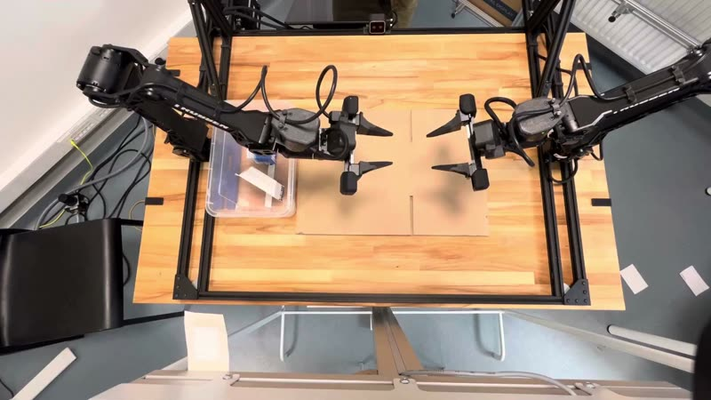
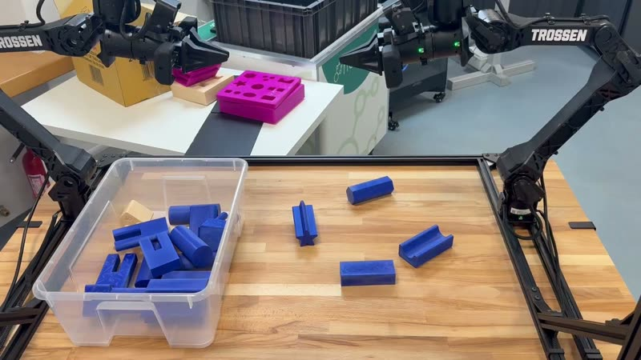
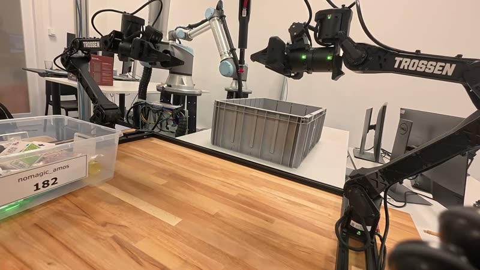

Mateusz Wyszyński · University of Warsaw · Nomagic · November 2026
what they are, how we train them
the bet, work so far, outlook
interactive lecture materials, the lab
Internet-scale data for robotics, from robots already at work
Publishing teaching materials
video: Physical Intelligence, π0.7 (2026)
What matters in the data when a large behavioural model is fine-tuned for production.
Steps on the way:
Expository material of this kind can be published, for example in SIAM Review.
$\mathbb P[X \in A] = \mathbb P[Y \in \varphi(A)]$: the mass moves with the map. Arrows: the two sides of $A$ after the map, i.e. the columns of the Jacobian $D\varphi$ times the side length (for small $A$). The area they span, relative to $A$, is the local area change $|\det D\varphi|$.
Consider an invertible map between random variables: $$Y = \varphi(X)$$
Probabilities have to stay the same: $$\mathbb P[Y \in B] = \mathbb P[X \in A] \;\Longrightarrow\; \int_B p_Y(y)\,dy = \int_A p_X(x)\,dx$$
Substitute $x = \varphi^{-1}(y)$ on the right: $$\int_A p_X(x)\,dx = \int_B p_X\big(\varphi^{-1}(y)\big)\,\big|\det D\varphi^{-1}(y)\big|\,dy$$
Toy reconstruction of a house from photos.
The whole graph is re-optimised at every step. Watch the ellipses: the pose uncertainty grows along the lap, the landmarks inherit it, and when the first landmarks are seen again the loop closes: everything moves and the ellipses collapse.



Thank you.